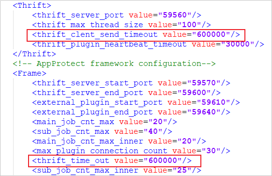

A resource scanning job (automatically, manually, or periodically triggered after resource access) is executed in the FusionOne Compute production environment. When there are thousands of VMs in the production environment, the scanning job times out and fails; alternatively, the scanning result is relatively delayed (the result of the last triggered scanning is displayed for the current scanning job).
If there are a large number of VMs, FusionOne Compute resource scanning may time out.
change container_application view pod_name=gaussdb-0 namespace=dpa container_name=gaussdb
sudo /opt/script/gauss_operation.sh "enter_sql" "PROTECT_MANAGER"
[GaussOp@gaussdb-0 gaussdb]$ sudo /opt/script/gauss_operation.sh "enter_sql" "PROTECT_MANAGER"
% Total % Received % Xferd Average Speed Time Time Time Current
Dload Upload Total Spent Left Speed
100 19170 0 19170 0 0 780k 0 --:--:-- --:--:-- --:--:-- 748k
[2022-09-26 09:17:25][INFO][login database: protect_manager.][GaussDB][55][enter_database]
gsql (9.2.4)
SSL connection (cipher: ECDHE-RSA-AES256-GCM-SHA384, bits: 256)
Type "help" for help.
PROTECT_MANAGER=#
update t_config set VALUE='Timeout interval' where KEY='agent_default_feign_readTimeOut';
update t_config set VALUE='600' where KEY='agent_default_feign_readTimeOut';
Assume the client installation directory is /opt:
vi /opt/DataBackup/ProtectClient/ProtectClient-E/conf/agent_cfg.xml
Change the value of thrift_clent_send_timeout and thrift_time_out to 600000 in agent_cfg.xml.
